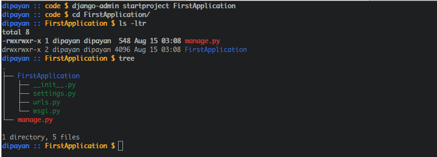
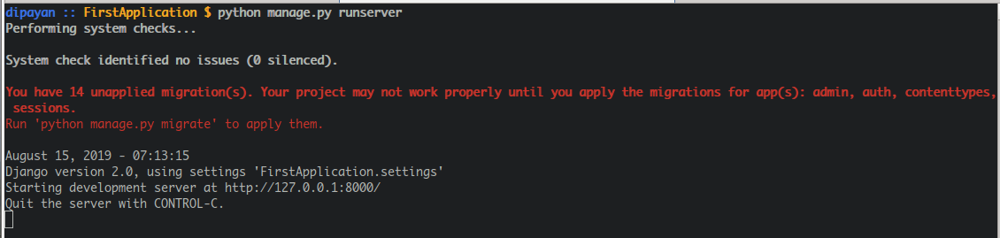

What is a Web Framework?
A Web framework can be considered as an application which helps developer
to deliver projects quickly with security in mind .
Less Code To Deliver fast.
Some features of web framework are
- Templates.
- Database Connectivity with all major databases.
- Web security i.e. CSRF , Sql Injection etc.
- URL Mapping.
- User Managment.
- Scalable.
Install Django
In order to install django version 2.0 or greater the basic requirement is to install python version 3.
This is command you need to type and hit enter in order to install django in your system .

How to Start Your First Project ?
In Django we can create several application inside a project . To create an application in django first we need to create a project . So, to do this you have to type the following command in your terminal.
Breaking The COMMAND!
django-admin :- This is script to run and manage all administrative
task for the project. Useing this command you can create project , application.
manage database migrations , get a shell and other stuff.
startproject: - This is the argument of the django-admin command.
using this argument you can create a project.
FirstApplication:- This is the name of the project. It's name can be anything

What's in the Directory?
The newly created Directory contains 1 file and 1 Directory.
Inside that Directory 4 files are present.
Files to look for
manage.py:-You can consider this file as tool to run , migrate
your project.
settings.py:- This the main settings file for your project. If you want to
add staticfiles you need to mention here , after createing a project we need to
add the project in this file . we need to add our template directory here .
urls.py:-The file that maintains the project url routing.
Run the Server
By default The application will run on port 8000 on your local host. The command will start the local development server on localhost port 8000. http://127.0.0.1:8000/
